General Knowledge
464 no-prep General Knowledge resources with answer keys: reading comprehension, reading trails, and more – filter by grade.
464 resources
Grade

Family Life Reading Comprehension Passages | Life Skills Scavenger Hunt 5-6
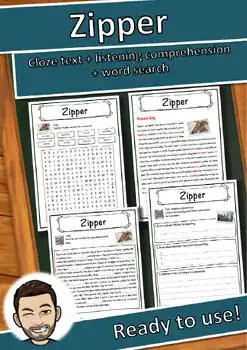
Zipper – Reading Comprehension: Cloze Text, Listening Task & Word Search
Zimmermann – Reading Comprehension: Cloze Text, Listening Task & Word Search
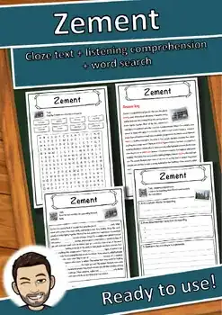
Zement – Reading Comprehension: Cloze Text, Listening Task & Word Search
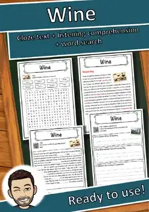
Wine – Reading Comprehension: Cloze Text, Listening Task & Word Search
Wind – Reading Comprehension: Cloze Text, Listening Task & Word Search
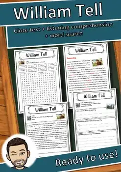
William Tell – Reading Comprehension: Cloze Text, Listening Task & Word Search
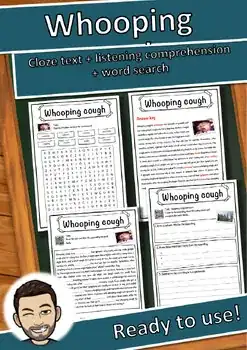
Whooping cough – Reading Comprehension: Cloze Text, Listening Task & Word Search
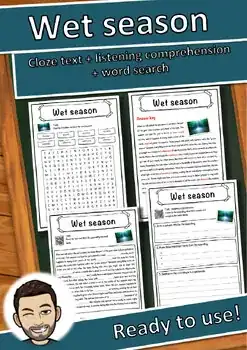
Wet season – Reading Comprehension: Cloze Text, Listening Task & Word Search
Wellington boot – Reading Comprehension: Cloze, Listening & Word Search
Week – Reading Comprehension: Cloze Text, Listening Task & Word Search
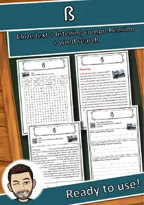
ß – Reading Comprehension: Cloze Text, Listening Task & Word Search
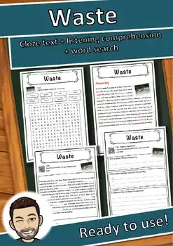
Waste – Reading Comprehension: Cloze Text, Listening Task & Word Search
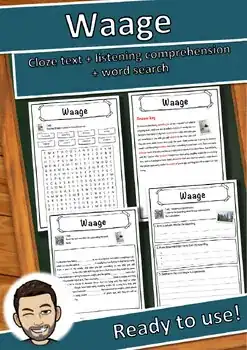
Waage – Reading Comprehension: Cloze Text, Listening Task & Word Search
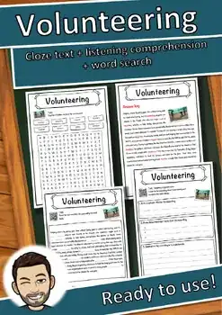
Volunteering – Reading Comprehension: Cloze Text, Listening Task & Word Search
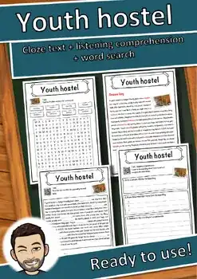
Youth hostel – Reading Comprehension: Cloze Text, Listening Task & Word Search
Vocal cords – Reading Comprehension: Cloze Text, Listening Task & Word Search
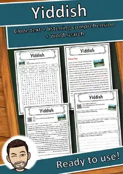
Yiddish – Reading Comprehension: Cloze Text, Listening Task & Word Search
Vikings – Reading Comprehension: Cloze Text, Listening Task & Word Search
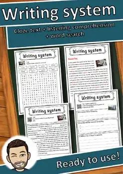
Writing system – Reading Comprehension: Cloze Text, Listening Task & Word Search
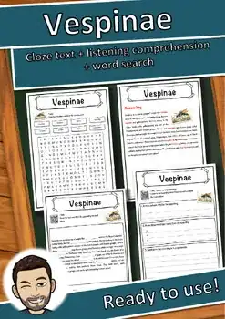
Vespinae – Reading Comprehension: Cloze Text, Listening Task & Word Search
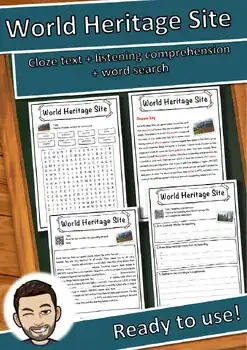
World Heritage Site – Reading Comprehension: Cloze, Listening & Word Search
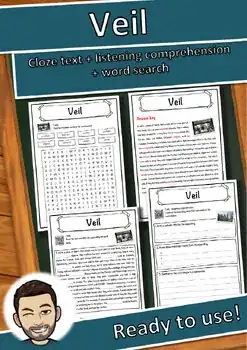
Veil – Reading Comprehension: Cloze Text, Listening Task & Word Search
Vacuum – Reading Comprehension: Cloze Text, Listening Task & Word Search
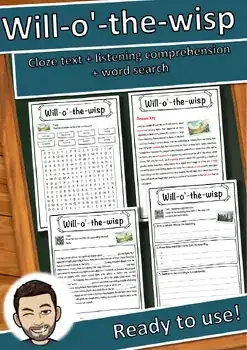
Will-o'-the-wisp – Reading Comprehension: Cloze, Listening & Word Search
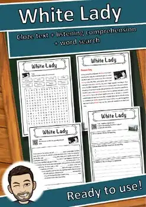
White Lady – Reading Comprehension: Cloze Text, Listening Task & Word Search
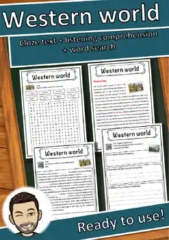
Western world – Reading Comprehension: Cloze Text, Listening Task & Word Search
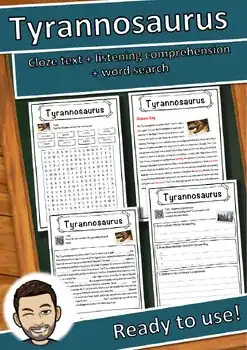
Tyrannosaurus – Reading Comprehension: Cloze Text, Listening Task & Word Search
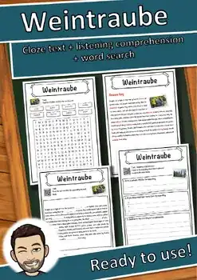
Weintraube – Reading Comprehension: Cloze Text, Listening Task & Word Search
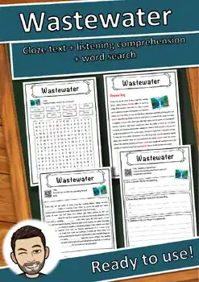
Wastewater – Reading Comprehension: Cloze Text, Listening Task & Word Search
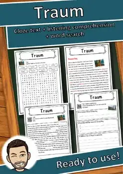
Traum – Reading Comprehension: Cloze Text, Listening Task & Word Search
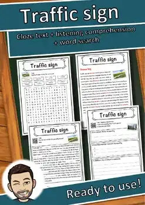
Traffic sign – Reading Comprehension: Cloze Text, Listening Task & Word Search
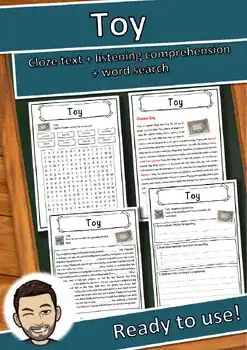
Toy – Reading Comprehension: Cloze Text, Listening Task & Word Search
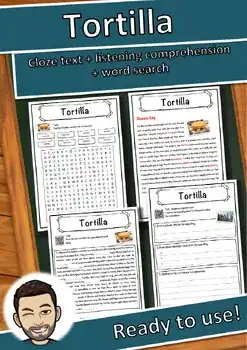
Tortilla – Reading Comprehension: Cloze Text, Listening Task & Word Search
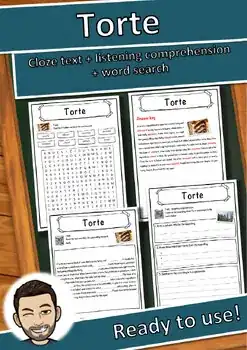
Torte – Reading Comprehension: Cloze Text, Listening Task & Word Search
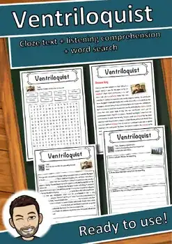
Ventriloquist – Reading Comprehension: Cloze Text, Listening Task & Word Search
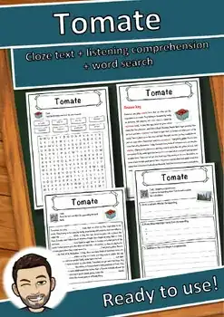
Tomate – Reading Comprehension: Cloze Text, Listening Task & Word Search
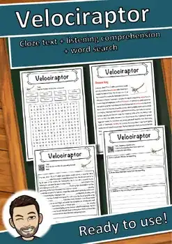
Velociraptor – Reading Comprehension: Cloze Text, Listening Task & Word Search
Vasco da Gama – Reading Comprehension: Cloze Text, Listening Task & Word Search
Thunderstorm – Reading Comprehension: Cloze Text, Listening Task & Word Search
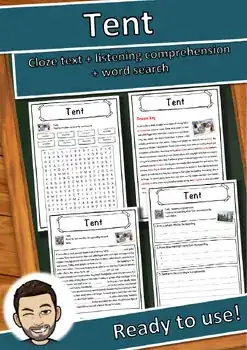
Tent – Reading Comprehension: Cloze Text, Listening Task & Word Search
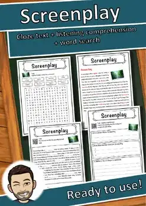
Screenplay – Reading Comprehension: Cloze Text, Listening Task & Word Search
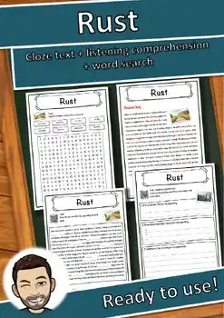
Rust – Reading Comprehension: Cloze Text, Listening Task & Word Search
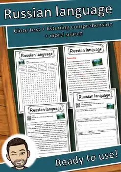
Russian language – Reading Comprehension: Cloze, Listening & Word Search
Rococo – Reading Comprehension: Cloze Text, Listening Task & Word Search
Pottery – Reading Comprehension: Cloze Text, Listening Task & Word Search
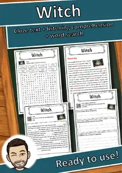
Witch – Reading Comprehension: Cloze Text, Listening Task & Word Search
Uniform – Reading Comprehension: Cloze Text, Listening Task & Word Search
No resources found – try a different search term or filter.